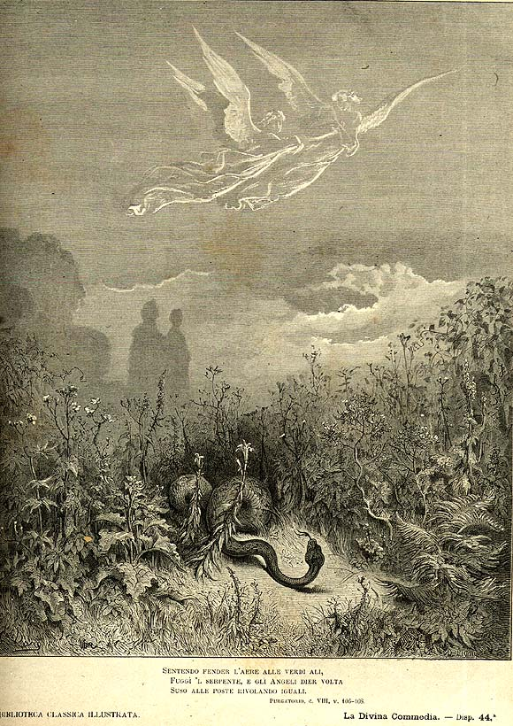

Песнь 8 из 33
Вечер в долине. Ангелы и змей

Кратко
Спускается вечер. Одна из душ запевает гимн «Te lucis ante», и с неба слетают два ангела с притупленными мечами — стеречь долину. Данте беседует с судьёй Нино Висконти, печалящимся о забывшей его вдове. Внезапно из травы выползает змей — ежевечернее искушение, — но ангелы тут же обращают его в бегство. Куррадо Маласпина расспрашивает о своём роде, и Данте предрекает, что вскоре сам узнает гостеприимство и благородство дома Маласпина (намёк на будущее изгнание поэта).
Главные моменты
- Знаменитый зачин «Era già l’ora…» — час, когда у плывущих щемит сердце по дому.
- Вечерний гимн «Te lucis ante» — молитва о защите в ночи.
- Ангелы и змей — образ ежевечернего, всякий раз отражаемого искушения.
- Благодарное пророчество роду Маласпина (предвестие изгнания Данте).
Значение
Тоска по родине и духовная бдительность: зло отражают, но оно возвращается каждый вечер.